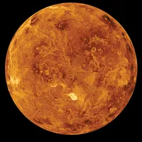
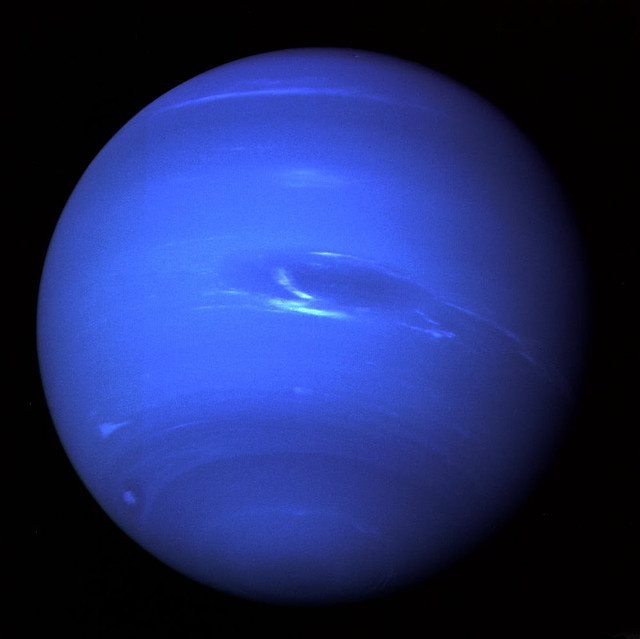
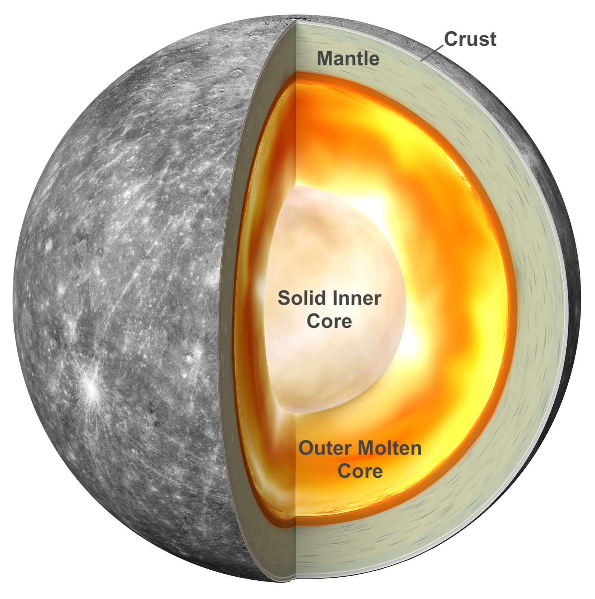
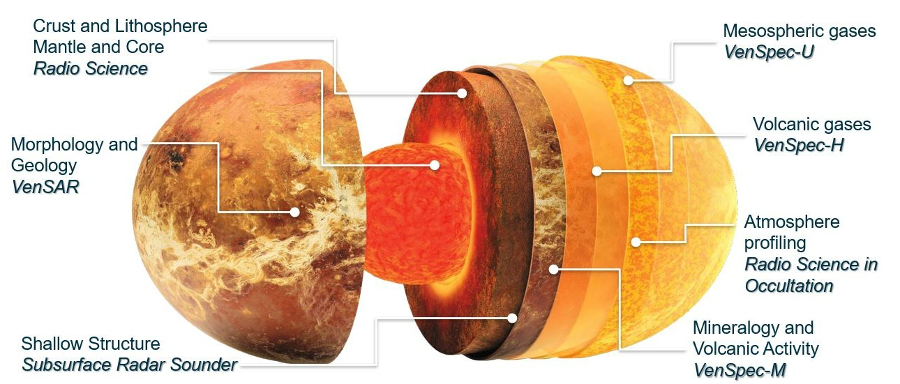
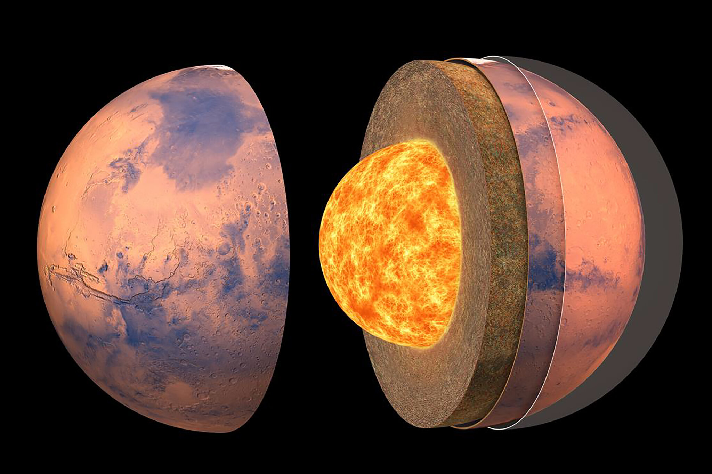
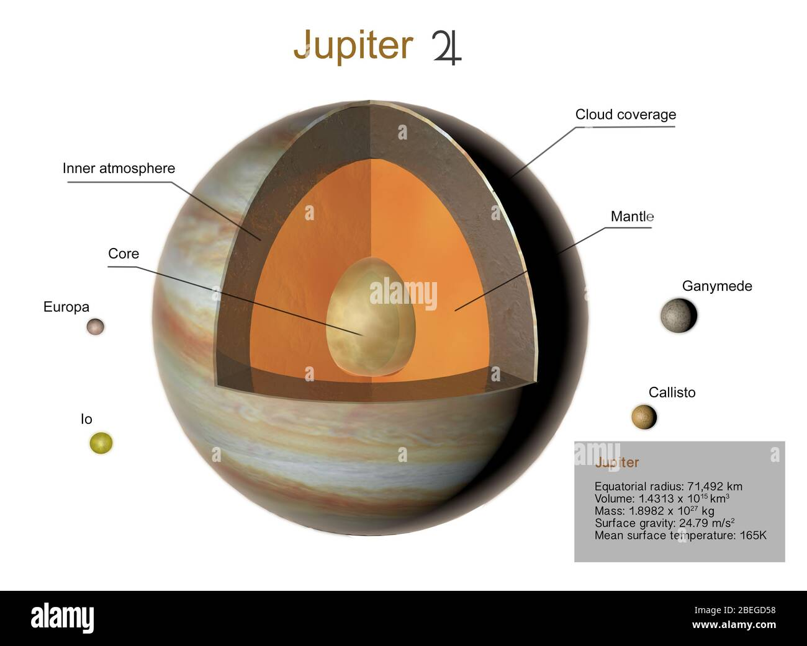

Astronomy Hub - Explore the cosmos with us
Webpage creator Havalic Adi
A collection of planets and objects from our solar system, including a
comet, Saturn, a galaxy and Earth. Astronomy is the study of everything
in the universe beyond Earth’s atmosphere. That includes objects we can
see with our naked eyes, like the Sun ,
the Moon , the planets, and
the stars .
 s
s
Planets in solar system
-
Mercury

-
Venus

-
Earth

-
Mars

-
Jupiter

-
Saturn

-
Uranus

-
Neptune

Mercury
Mercury, the smallest planet in our solar system with a diameter
of about 4,880 kilometers (3,032 miles), is the closest to the Sun,
orbiting at an average distance of about 58 million kilometers (36
million miles). This proximity results in extreme temperature
variations, soaring to about 430°C (800°F) during the day and
plummeting to -180°C (-290°F) at night.
Mercury has a short orbital period of 88 Earth days but a slow
rotation period of 59 Earth days. Its thin atmosphere, composed
mainly of oxygen, sodium, hydrogen, helium, and potassium, cannot retain
heat, contributing to the temperature fluctuations. The planet's
surface, heavily cratered and resembling the Moon, includes the large
Caloris Basin.

Despite its small size, Mercury has a magnetic field about
1% as strong as Earth's and is the second densest planet in the
solar system due to its large metallic core. Unlike many other planets,
Mercury lacks moons and rings.
It has been explored by two NASA missions: Mariner 10 in the 1970s
and MESSENGER from 2011 to 2015.
Venus
Venus, often called Earth's "sister planet," is similar in size
to Earth, with a diameter of about 12,104 kilometers (7,521
miles). It is the second planet from the Sun, orbiting at an average
distance of about 108 million kilometers (67 million miles).
Venus is known for its extreme atmospheric conditions, with surface
temperatures reaching about 470°C (880°F), making it the
hottest planet
in our solar system.
This intense heat is due to its thick atmosphere composed mainly of
carbon dioxide with clouds of sulfuric acid. Venus has a
slow rotation
on its axis, taking about 243 Earth days to complete one rotation, but
it has a relatively short orbital period of about
225 Earth days. Its surface is rocky and cratered, similar to
Earth's Moon, with volcanic features and vast plains.

Venus has no moons and lacks a magnetic field comparable to
Earth's.
It has been extensively studied by spacecraft, including NASA's
Magellan mission in the 1990s and more recent missions focused on
studying its atmosphere and surface conditions.
Earth
Earth, approximately 4.54 billion years old, has a diameter of
about 12,742 kilometers (7,918 miles) and a circumference of
approximately 40,075 kilometers (24,901 miles) at the equator. About 71%
of Earth's surface is covered by water, with the remaining 29% being
land. Its atmosphere is composed of 78% nitrogen, 21% oxygen, and
1% other gases such as argon, carbon dioxide, neon, and helium. Earth
boasts a strong magnetic field generated by the movement of molten iron
and nickel in its outer core, protecting the planet from harmful solar
radiation.
The Pacific Ocean, the largest and deepest ocean, covers more
area than all the landmasses combined. There are
seven continents:
Africa, Antarctica, Asia, Europe, North America, Australia, and South
America. Earth is the only known planet to support life, with diverse
ecosystems ranging from tropical rainforests to polar ice caps. It
rotates on its axis every 24 hours, giving us day and night, and orbits
the Sun every 365.25 days, defining a year.

Earth's axial tilt of approximately 23.5 degrees causes
seasonal changes as different parts of the planet receive varying
amounts of sunlight throughout the year. Its gravity is strong enough to
hold an atmosphere and keep water in liquid form, both of which are
essential for life.
Mars
Mars, known as the "Red Planet," is the fourth planet from the
Sun and has a diameter of about 6,779 kilometers (4,212 miles),
roughly half the size of Earth. Its thin atmosphere is primarily
composed of carbon dioxide (95.3%), with traces of nitrogen and argon.
The reddish surface of Mars is due to iron oxide, or rust.
It features the solar system's largest volcano, Olympus Mons, which
is 22 kilometers (13.6 miles) high, and the longest canyon, Valles
Marineris, stretching over 4,000 kilometers (2,500 miles).
Mars has an axial tilt of about 25 degrees, causing seasons
that are nearly twice as long as those on Earth, as it takes Mars 687
Earth days to orbit the Sun. The planet's polar ice caps, made of water
and dry ice (frozen carbon dioxide), grow and shrink with the
seasons. Evidence suggests Mars once had liquid water, raising the
possibility it could have supported microbial life. Mars has two small
moons, Phobos and Deimos, believed to be captured asteroids.

The average surface temperature is around -80 degrees
Fahrenheit (-60 degrees Celsius), ranging from -195 degrees
Fahrenheit (-125 degrees Celsius) in winter near the poles to 70 degrees
Fahrenheit (20 degrees Celsius) in summer near the equator. The thin
atmosphere and lack of a magnetic field make the surface environment
harsh, exposing it to high levels of solar radiation.
Mars is a key focus for exploration, with many missions studying
its geological history
Jupiter
Jupiter, the largest planet in our solar system, has a diameter
of about 139,820 kilometers (86,881 miles), more than 11 times
that of Earth. It is a gas giant primarily composed of hydrogen
(about 90%) and helium (about 10%), with trace amounts of other gases
like methane, ammonia, and water vapor. Jupiter's most distinctive
feature is the Great Red Spot, a massive stormlarger
than Earth that has been raging 0 for centuries. The planet has a rapid
rotation, completing a full spin on its axis in just about
10 hours, which causes its shape to be an oblate spheroid,
flattened at the poles and bulging at the equator.
Jupiter has a strong magnetic field, about 20,000 times
stronger than Earth's, generated by the movement of metallic hydrogen
within its interior. It also has a faint ring system composed mainly of
dust particles from its moons. Speaking of moons, Jupiter has at least
79 known moons, including the four large Galilean moons: Io,
Europa, Ganymede, and Callisto. Ganymede, the largest of these, is even
bigger than the planet Mercury

Temperatures at the cloud tops are around -145 degrees Celsius
(-234 degrees Fahrenheit), but they increase significantly with depth
due to the planet's internal heat. Jupiter emits more heat than it
receives from the Sun, primarily due to the
slow gravitational compression of the planet's core. This giant
planet has been a key target for exploration, with missions like
Galileo, Juno, and various flybys providing valuable information about
its composition, atmosphere, magnetosphere, and extensive moon system.
Saturn
Saturn, the sixth planet from the Sun, is well known for its
stunning ring system. With a diameter of about 116,460 kilometers
(72,366 miles), it is the second-largest planet in our solar system.
Saturn is a gas giant primarily composed of hydrogen
(about 96%) and helium (about 3%),
with traces of methane, ammonia, and other gases. The planet has a
yellowish-brown color, which is a result of ammonia crystals in its
upper atmosphere.
Saturn's rings are its most distinctive feature, consisting of countless
small particles of ice and rock that range in size from tiny grains to
objects as large as mountains. These rings are divided into seven main
groups, named alphabetically in the order they were discovered, and are
incredibly thin, only about 10 meters (30 feet) thick in some places.
Saturn has at least 83 known moons, with Titan being the largest. Titan
is larger than the planet Mercury and is unique for its dense atmosphere
and surface lakes of liquid methane and ethane. Other notable moons
include Enceladus, which has geysers that spew water ice, suggesting the
presence of a subsurface ocean.
The planet is about 1.4 billion kilometers (886 million miles) from the
Sun and takes approximately 29.5 Earth years to complete one orbit.
Saturn's average temperature is around -178 degrees Celsius (-288
degrees Fahrenheit), and like Jupiter, it emits more heat than it
receives from the Sun due to the slow gravitational compression of its